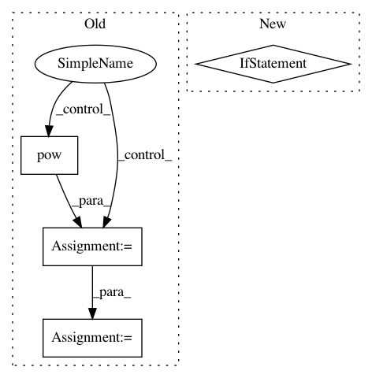

8cdbb1637b140c01f431831e7b2c2a63afc96209,kapre/time_frequency.py,Spectrogram,call,#Spectrogram#Any#,139
Before Change
axis=self.ch_axis_idx,
)
if self.power_spectrogram != 2.0:
output = K.pow(K.sqrt(output), self.power_spectrogram)
if self.return_decibel_spectrogram:
output = backend_keras.amplitude_to_decibel(output)
return output
def get_config(self):
config = {
After Change
// (batch, time, ch) if input_data_format == "channels_last".
// this is needed because tf.signal.stft lives in channels_first land.
if self.input_data_format == "channels_last":
signals = tf.transpose(signals, perm=(0, 2, 1)) // (batch, ch, time)
stfts = tf.signal.stft(
signals=signals,
frame_length=self.win_length,
frame_step=self.hop_length,
In pattern: SUPERPATTERN
Frequency: 3
Non-data size: 4
Instances
Project Name: keunwoochoi/kapre
Commit Name: 8cdbb1637b140c01f431831e7b2c2a63afc96209
Time: 2020-08-14
Author: gnuchoi+github@gmail.com
File Name: kapre/time_frequency.py
Class Name: Spectrogram
Method Name: call
Project Name: OpenNMT/OpenNMT-py
Commit Name: 57dac10ec6b131842667bf58746168d9e99de9b3
Time: 2017-03-14
Author: bryan.mccann.is@gmail.com
File Name: onmt/Optim.py
Class Name: Optim
Method Name: step
Project Name: pytorch/examples
Commit Name: f5f63fb9c06cd626ff64a31b976e148c92ff99d1
Time: 2017-03-14
Author: bryan.mccann.is@gmail.com
File Name: OpenNMT/onmt/Optim.py
Class Name: Optim
Method Name: step